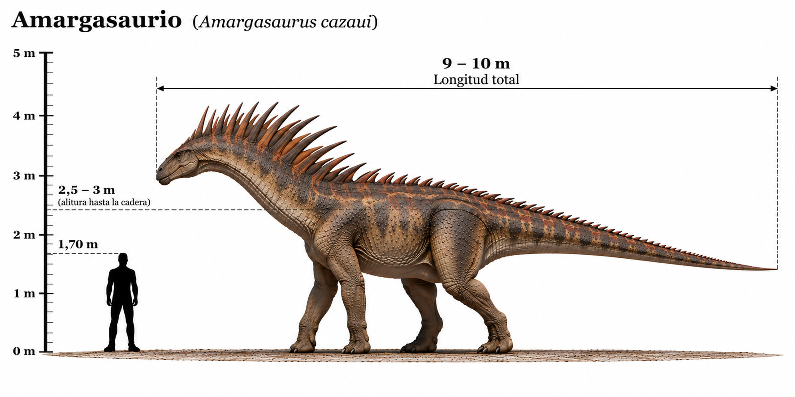

Amargasaurus cazaui

El Amargasaurus cazaui fue un dinosaurio saurópodo herbívoro que habitó América del Sur durante el Cretácico temprano, hace aproximadamente 129–122 millones de años. Vivió en lo que actualmente es Argentina y se caracterizaba por su largo cuello, su pequeña cabeza y, especialmente, por las dos hileras de largas espinas óseas que recorrían su cuello. A diferencia de otros saurópodos gigantes, el Amargasaurus era relativamente pequeño, con una longitud aproximada de 9–10 metros. Las espinas de su cuello pudieron desempeñar funciones de exhibición, reconocimiento entre individuos o defensa, aunque su función exacta continúa siendo objeto de investigación.
- Grupo: Saurópodo.
- Familia: Dicraeosauridae (dicreosáuridos).
- Período: Cretácico temprano (hace aproximadamente 129–122 millones de años).
- Alimentación: Herbívoro.
- Longitud: Aproximadamente 9–10 metros.
- Altura: Aproximadamente 2,5–3 metros hasta la cabeza.
- Localización: América del Sur (Argentina).
